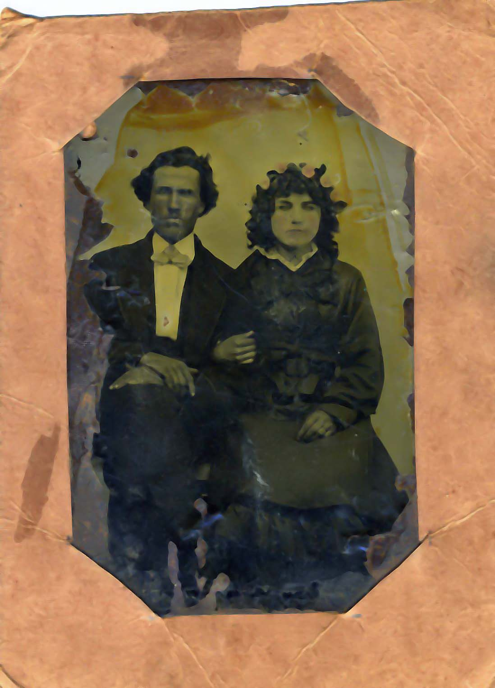

This may be a photograph of William B. Cook and Jane M. nee Bath Cook that could have been taken on their wedding day. The photograph has been identified as William B. and Jane M. Cook and appeaers to be the right age, but we have no independent confirmation that this is indeed a photograph of our Jane nee Bath Cook and her husband.
Last updated on 20 Jul 2006